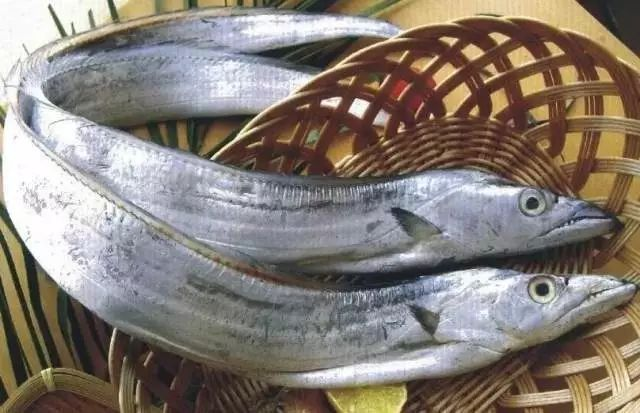
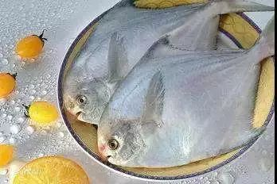
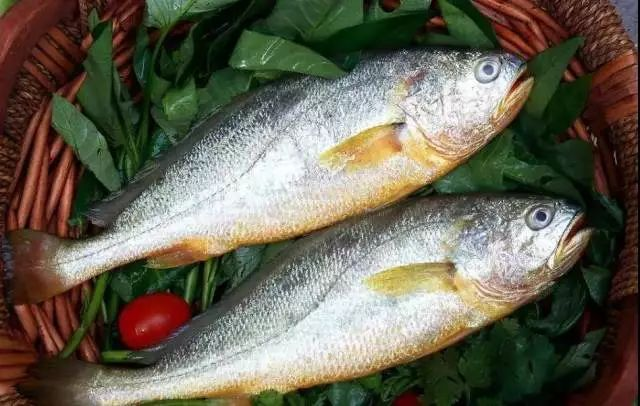
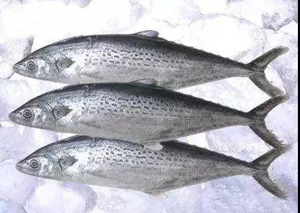
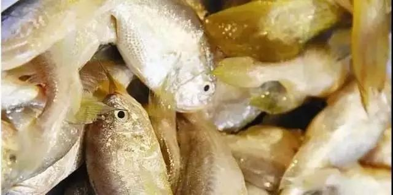
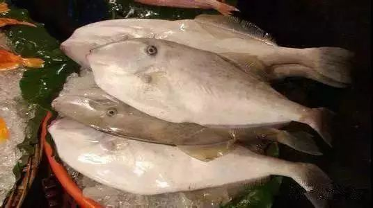
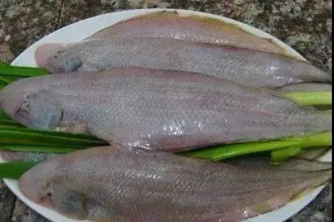
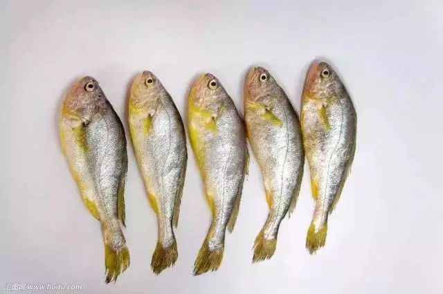

带鱼 Trichiurus lepturus

“带鱼吃肚皮，说话讲道理。”舟山带鱼，吃货们的最爱，尤其是肚皮那个部位，最鲜美。常食用带鱼有补脾、益气、暖胃、养肝、泽肤、补气、养血、健美的作用。
银鲳 Pampus argenteus

银鲳，俗称鲳鳊鱼。
新鲜的鲳鱼，腹部如丝绸兜肚，滑溜溜、光闪闪，又称为白鲳。因其扁平阔大、肌间刺较少，特别适合孩子食用。
大黄鱼 Larimichthys crocea

在舟山人家的饭桌上，自古少不了大黄鱼这道菜；咸菜大汤黄鱼和黄鱼鲞，算是代表作。
色泽亮黄如金、鱼肉细若精瓷的大黄鱼，或清蒸，或红烧，或醋溜，或制鲞，样样皆可。但野生大黄鱼的价格，实在是高。中医认为，黄鱼对贫血、失眠、头晕、食欲不振及妇女产后体虚有良好疗效
蓝点马鲛鱼 Scomberomorus niphonius

马鲛鱼，在北方叫“鲅鱼”。舟山人习惯以雪菜煮或抱盐清蒸。马鲛鱼肉质细腻、味道鲜美、营养丰富，含丰富蛋白质、维生素A、矿物质等营养元素，有补气、平咳作用，对体弱咳喘有一定疗效，马鲛鱼还具有提神和防衰老等食疗功能.
棘头梅童鱼 Collichthys lucidus

梅童鱼头大而钝圆，额头突起，头部约占全身1/3，俗称“大头梅童”。梅童鱼肉质极嫩，多为清蒸或加咸菜烧汤。
绿鳍马面鲀 Thamnaconus septentrionalis

绿鳍马面鲀，因其皮肤强韧，须先剥皮才可食用，故俗称剥皮鱼
剥皮鱼在厚皮剥去后，露出细嫩鲜美的白肉，清蒸、红烧，都饶有滋味。
舌鳎 Cynoglossus oligolepis

样子其貌不扬，但贵在刺少，味道鲜美。舌鳎分为粗鳞和细鳞两种，精明的“马大嫂”一定会选择肉质更为鲜美的细鳞舌鳎。
小黄鱼 Larimichthys polyactis

小黄鱼的体型，介于大黄鱼和梅童鱼之间。不同地理群体的颜色，会有一些差异，总体以身体金黄、口部鲜红为佳。